Christ Care Ministry
Helping those in need.
Nourishing body & soul.
The good Lord has blessed us to be a blessing to others — that's how we see it. We get the trucks loaded up and head out, carrying food and supplies to families, churches, and communities across several states. Come be a part of it.
We run on donations and faith — in that order sometimes.
Fuel, truck upkeep, and supplies all cost money. Every dollar goes straight to getting food to folks who need it.
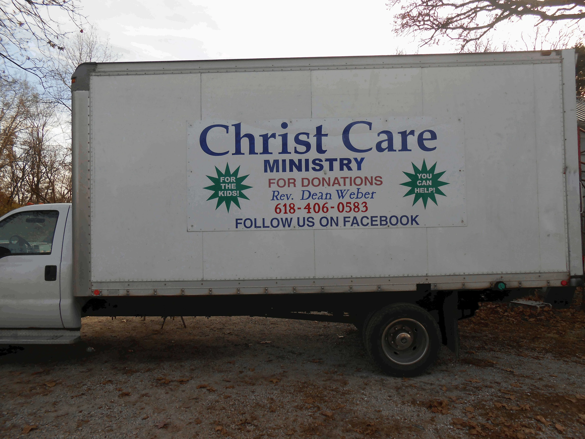
Rev. Dean Weber
I'm Rev. Dean Weber, and the good Lord put it on my heart a good while back to get out there and help folks. So that's what I do. I get the trucks loaded up and I go — to churches, food pantries, and families wherever the need is. Lord willing, I'll keep right on going.
We run two box trucks. We patch 'em up ourselves when we need to and we push 'em hard. If you've got a need or you want to pitch in, reach out.
Serving: IL, KY, VA, WV, MO, LA, and beyond
Our Mission
We're a Christian ministry. We load the trucks up with food and supplies and drive 'em to people who need help — food pantries, churches, and families spread across several states. It ain't fancy, but it gets done.
Faith-Driven
God called us to go out and help folks, so we go. That's the whole reason right there.
Direct Delivery
Two box trucks, a whole lot of miles, and a willingness to drive through the night if that's what it takes.
Community Impact
Illinois, Kentucky, Virginia, West Virginia, Missouri, Louisiana — and Lord willing, wherever else He opens a door.
Our Services
Food, household supplies, Christmas gifts — if we can get it, we'll bring it. We've driven through the night and through all kinds of weather to get supplies where they're needed. That's just what this is.
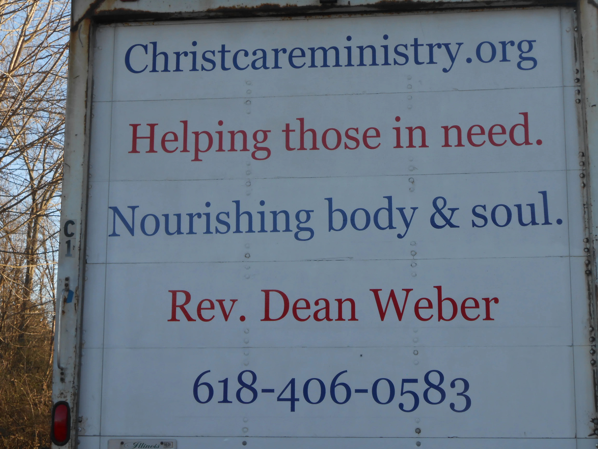
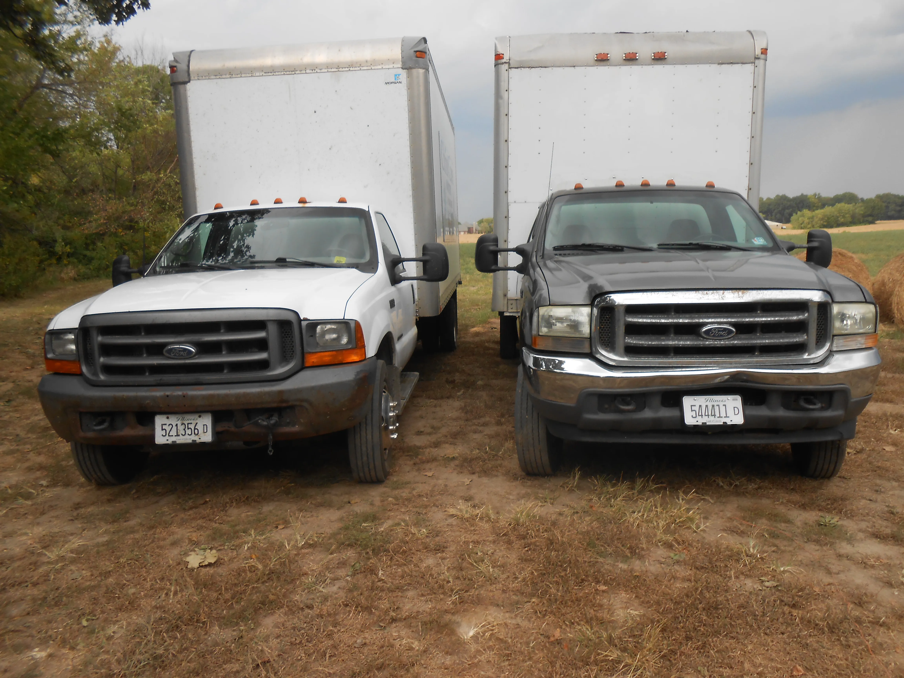
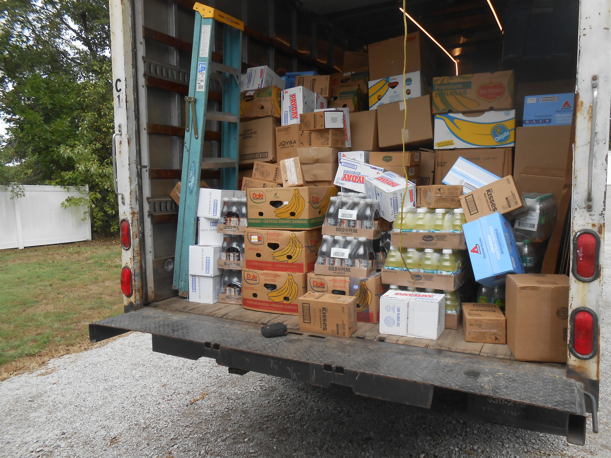
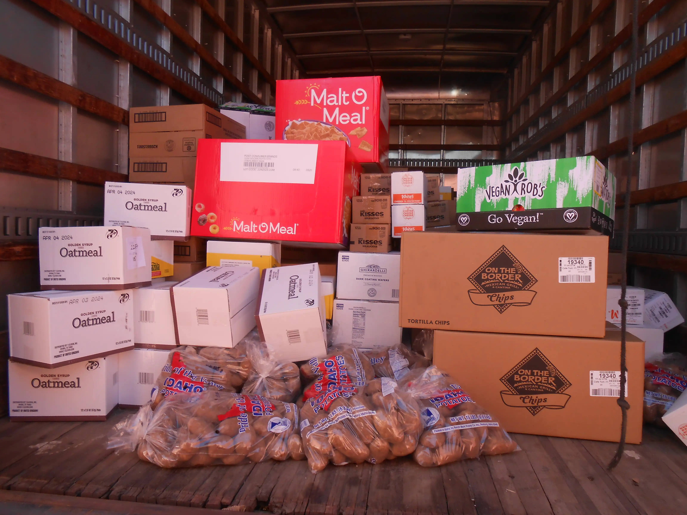
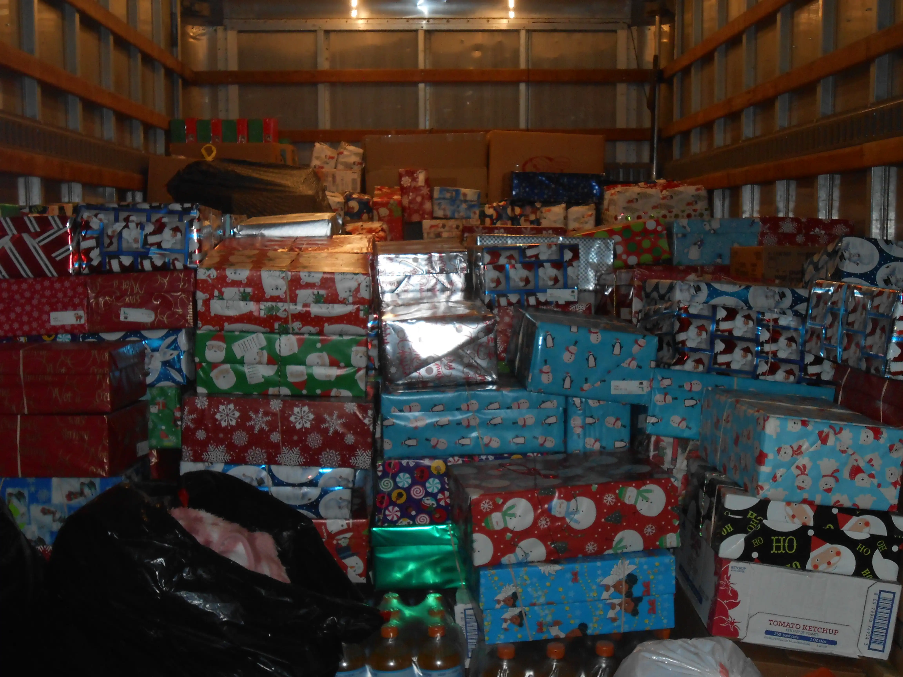
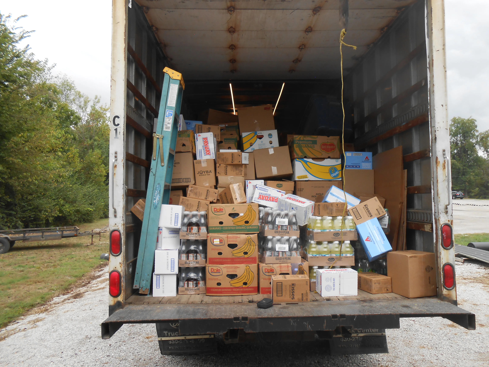
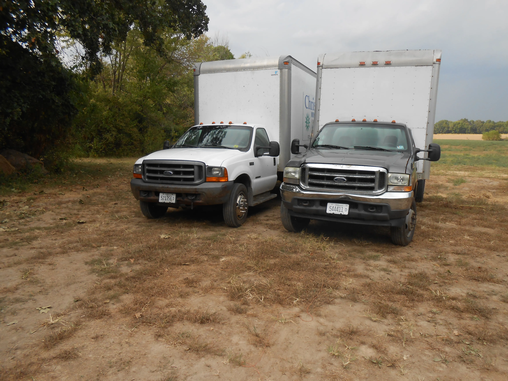
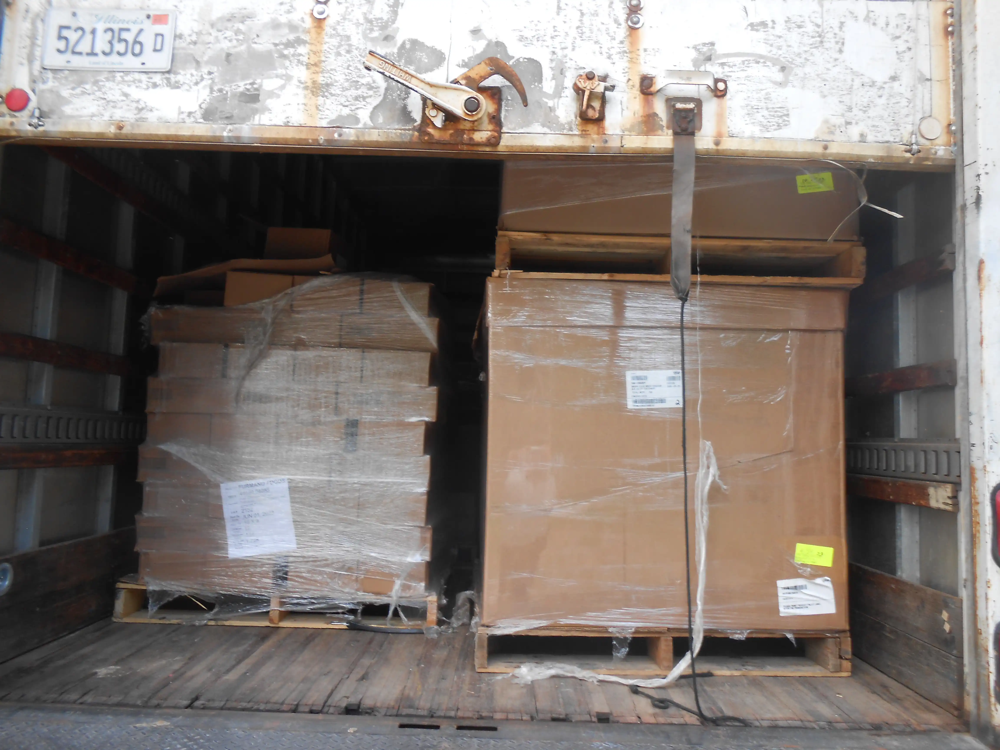
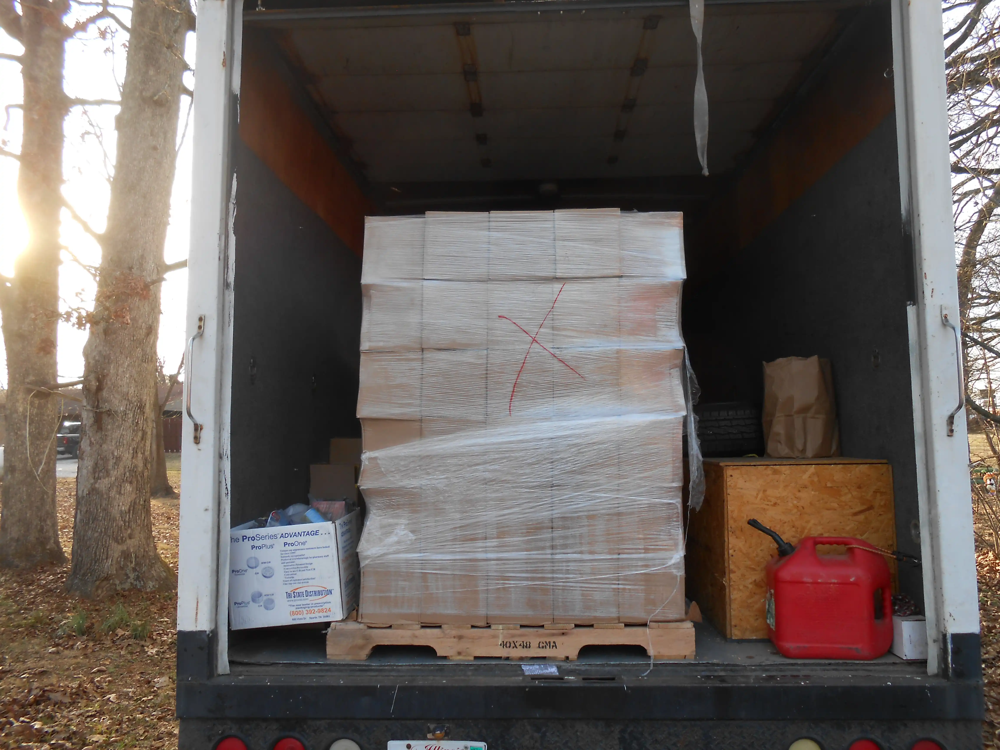
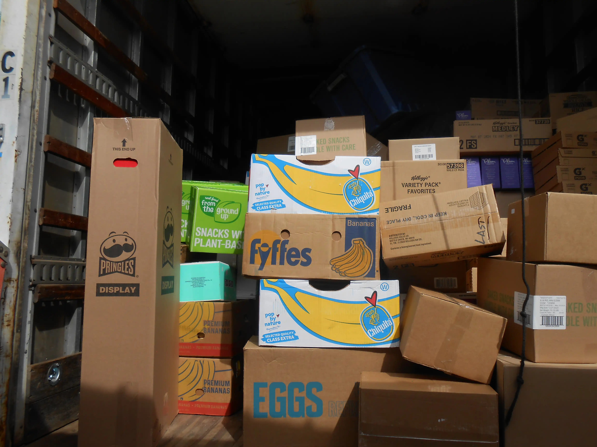
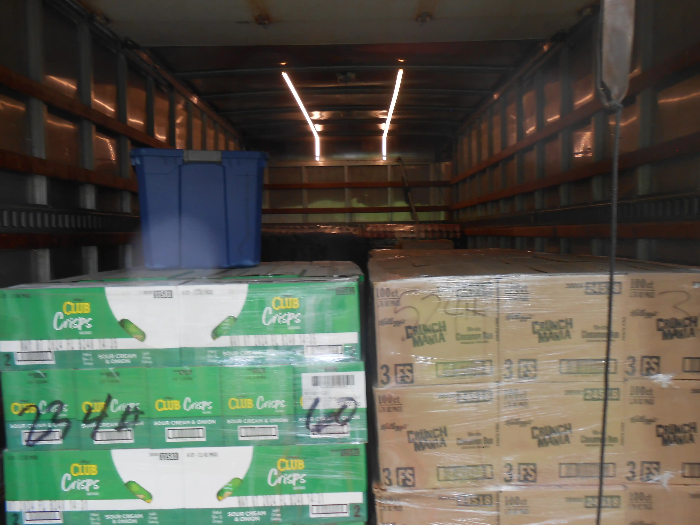
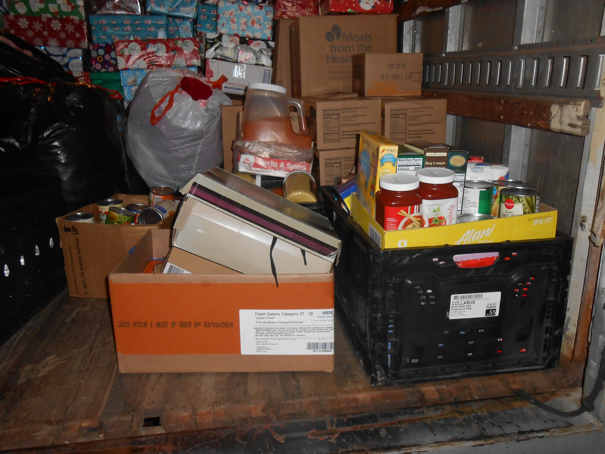